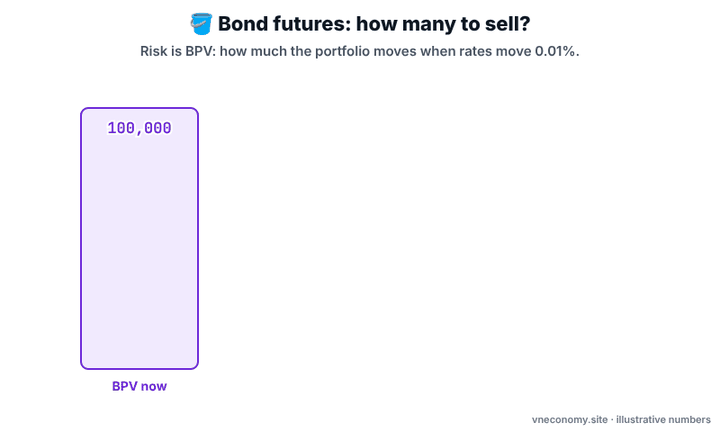
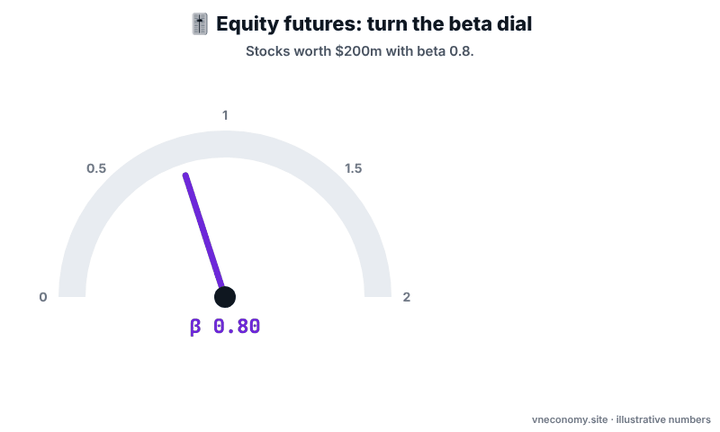
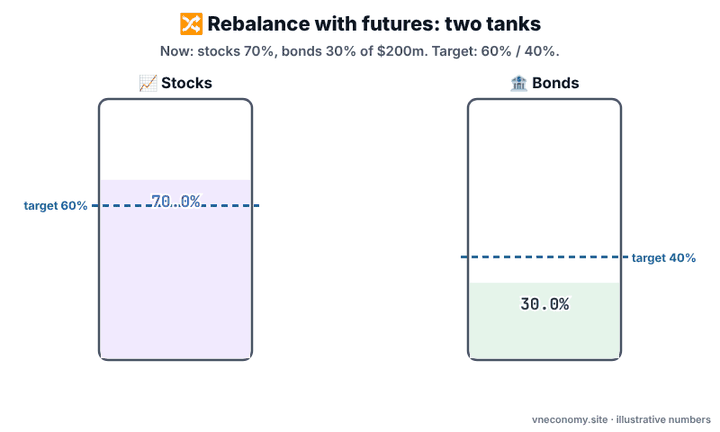
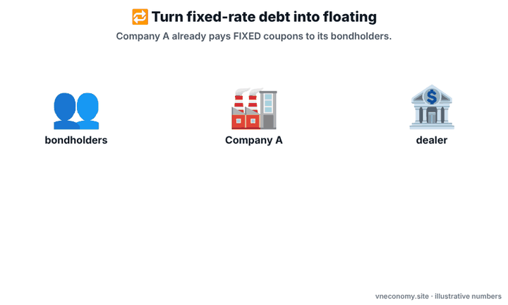
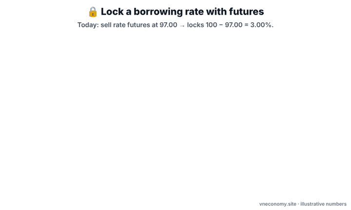
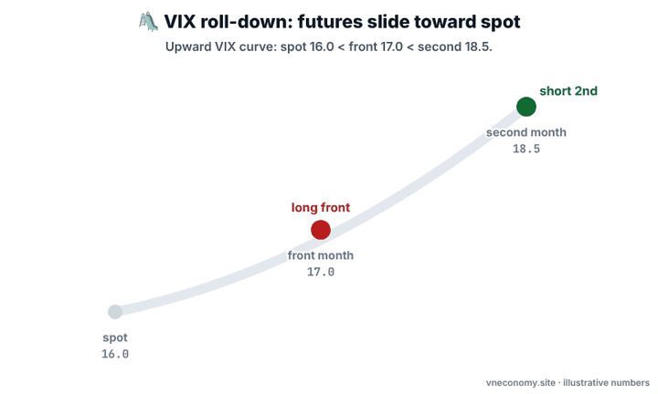

Macro · Guide
Swaps, forwards and futures: the mechanics, step by step
Nine animated clips show what derivatives do to a portfolio: measure the risk you have, pick the risk you want, then fill the gap with contracts
Key points
- One sizing formula: contracts = (risk you want − risk you have) ÷ risk in one contract. A negative answer means sell, a positive one means buy. For bonds the risk is BPV; for stocks it is beta × value; for an interest rate swap it is duration.
- Building a swap: pay the cash flows of what you have, receive the cash flows of what you want. The notional is the amount you want to change. A currency swap exchanges principal at the start and the end at the same rate.
- Futures prices carry information: rate = 100 − price; fed funds futures give the chance of a Fed hike; at expiry a futures price must meet the spot price (VIX roll-down, the bond basis).
This follows the option payoff guide. Each clip runs about 20 seconds, then holds the answer for 4. The colours never change: purple is what you have, blue is the target, orange is one contract, green is buy or receive, red is sell or pay.
1 · Sizing: how many contracts
Every sizing question takes three steps: measure the risk you have, measure the risk you want, then divide the gap by the risk in one contract.
Contracts = (want − have) ÷ one contract · negative → sell · positive → buy




2 · Building a swap
A swap is two cash flows running in opposite directions. The leg you pay cancels what you have; the leg you receive is what you want. Questions usually ask for four boxes: tenor, cash flows, notional and settlement dates.


3 · Reading rates from futures prices
Interest rate futures are quoted as 100 − the rate. Selling them today locks a borrowing rate; the price of fed funds futures tells you how much the market is betting on a hike.

4 · Volatility and convergence
A variance swap pays on volatility squared, so one volatility point is worth about 2 × the strike in variance points. A futures price must equal the spot price at expiry: that is where the VIX roll-down trade and the bond basis trade make their money.


Method and sources
All numbers are illustrative, not market prices. The formulas used in the clips:
- BPV = modified duration × value × 0.0001 · one bond futures contract ≈ BPV of the cheapest-to-deliver bond (CTD) ÷ its conversion factor (CF).
- Equity index futures: N = (target beta − current beta) ÷ futures beta × portfolio value ÷ value of one contract.
- Interest rate swap: notional = (target duration − current duration) ÷ swap duration × portfolio value.
- Rate = 100 − price · P(hike) = (implied rate − current level) ÷ (level after a hike − current level).
- Variance notional = vega notional ÷ (2 × strike) · value = variance notional × (expected variance − strike²) × discount factor. Volatility is written in points (20, not 0.20).
Personal study material, not investment advice.